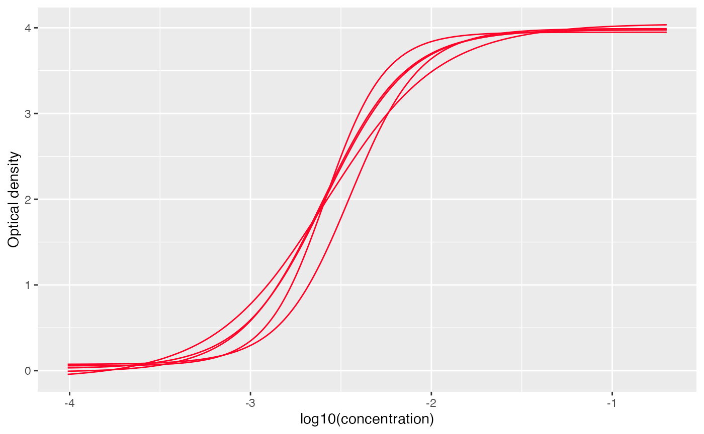
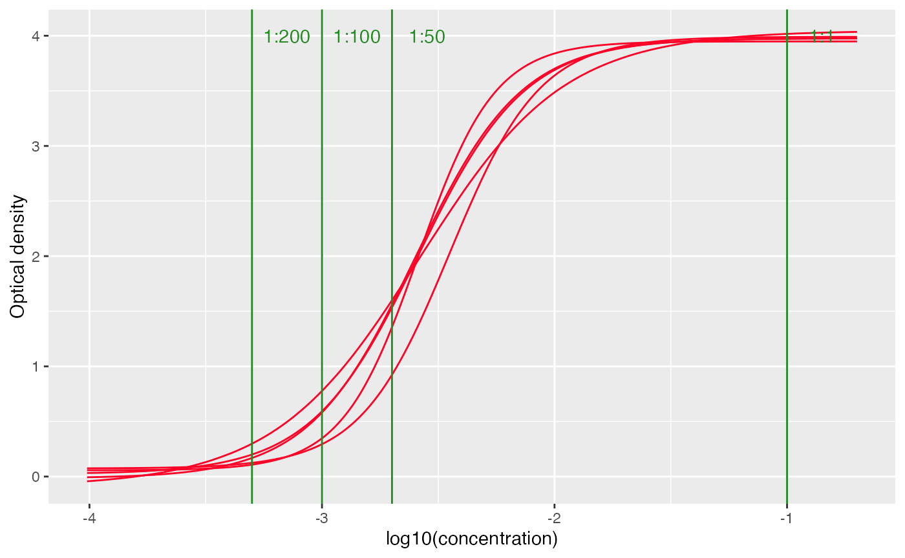
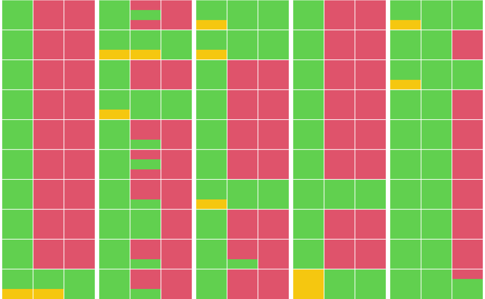
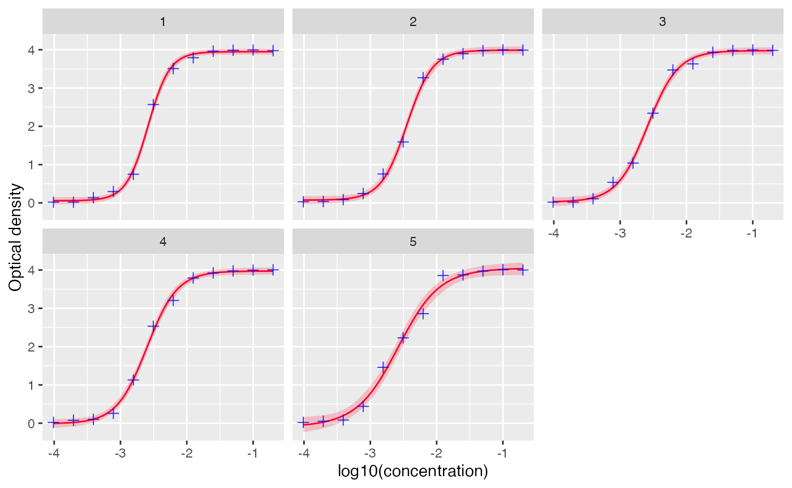

Overview
Serological assays often produce raw signals such as optical density (OD) or fluorescence intensity. These measurements are not directly interpretable and must be converted to titers (e.g., IU/ml) using a calibration model.
serosv provides the function to_titer()
perform this conversion by fitting a standard curve (per plate) and
mapping assay readings to estimated titers
Convert to titer workflow
The input data is expected to have the following information
Sample id containing id for samples or label for antitoxins
Plate id the id of each plate (the standard curve will be fitted for each plate)
Dilution level (e.g., 50, 100, 200)
(Optionally) the columns for result for negative control at different dilution level (e.g., negative_50, negative_100, and negative_200)
To demonstrate the use of this function, we will use a simulated dataset
Code for simulating data
set.seed(1)
# Config
n_samples <- 50
n_plates <- 5
dilutions <- c(50, 100, 200)
ref_conc_antitoxin <- 10
# 4PL function: OD = D + (A - D) / (1 + 10^((log10(conc) - c) * b))
mock_4pl <- function(conc, A = 0, B = 1.8, C = -2.5, D = 4) {
D + (A - D) / (1 + 10^(( log10(conc) - C)*B))
}
# Assign each sample a "true" concentration (UI/ml)
# ~60% positive (conc > 0.1), ~40% negative
sample_meta <- tibble(
SAMPLE_ID = sprintf("S%03d", 1:n_samples),
PLATE_ID = rep(1:n_plates, length.out = n_samples),
true_conc = c(
runif(round(n_samples * 0.8), 0.15, 100), # positives
runif(round(n_samples * 0.2), 0.001, 0.09) # negatives
) %>% sample() # shuffle
)
# Negative control concentrations per plate (one fixed OD per plate per dilution)
neg_ctrl_conc <- tibble(
PLATE_ID = 1:n_plates,
true_neg_conc = runif(n_plates, 0.001, 0.04),
neg_conc_50 = true_neg_conc/50,
neg_conc_100 = true_neg_conc/100,
neg_conc_200 = true_neg_conc/200
)
neg_ctrl <- neg_ctrl_conc %>%
mutate(
NEGATIVE_50 = round(mock_4pl(neg_conc_50) + rnorm(n_plates, 0, 0.003), 4),
NEGATIVE_100 = round(mock_4pl(neg_conc_100) + rnorm(n_plates, 0, 0.003), 4),
NEGATIVE_200 = round(mock_4pl(neg_conc_200) + rnorm(n_plates, 0, 0.003), 4)
) %>%
select(PLATE_ID, NEGATIVE_50, NEGATIVE_100, NEGATIVE_200)
# Antitoxin
antitoxin_conc <- c(50, 100, 200, 400, 800, 1600, 3200, 6400, 12800, 25600, 51200, 102400)
antitoxin <- tibble(
SAMPLE_ID = rep("Antitoxin", n_plates),
true_conc = rep(ref_conc_antitoxin, n_plates),
PLATE_ID = 1:n_plates
) %>%
crossing(
DILUTION = antitoxin_conc
) %>%
mutate(
eff_conc = true_conc/DILUTION
)
# Generate one row per sample × dilution, compute OD via 4PL + noise
simulated_data <- sample_meta %>%
crossing(DILUTION = dilutions) %>%
mutate(
eff_conc = true_conc / DILUTION
) %>%
bind_rows(
antitoxin
) %>%
mutate(
# Effective concentration decreases with dilution
od_mean = mock_4pl(eff_conc,
B = runif(n(), 1.7, 1.9),
C = runif(n(), -2.7, -2.4)),
noise = rnorm(n(), 0, 0.008),
RESULT = round(pmax(od_mean + noise, 0.02), 4),
# Blanks: clearly below result (reagent background only)
BLANK_1 = round(runif(n(), 0.010, pmin(RESULT - 0.01, 0.045)), 4),
BLANK_2 = round(runif(n(), 0.010, pmin(RESULT - 0.01, 0.045)), 4),
BLANK_3 = round(runif(n(), 0.010, pmin(RESULT - 0.01, 0.045)), 4)
) %>%
left_join(neg_ctrl, by = "PLATE_ID") %>%
select(
SAMPLE_ID, PLATE_ID,
DILUTION, RESULT,
# BLANK_1, BLANK_2, BLANK_3,
NEGATIVE_50, NEGATIVE_100, NEGATIVE_200
) %>%
arrange(PLATE_ID, SAMPLE_ID, DILUTION)
simulated_data## # A tibble: 210 × 7
## SAMPLE_ID PLATE_ID DILUTION RESULT NEGATIVE_50 NEGATIVE_100 NEGATIVE_200
## <chr> <int> <dbl> <dbl> <dbl> <dbl> <dbl>
## 1 Antitoxin 1 50 3.98 0.306 0.0939 0.0269
## 2 Antitoxin 1 100 4.00 0.306 0.0939 0.0269
## 3 Antitoxin 1 200 3.99 0.306 0.0939 0.0269
## 4 Antitoxin 1 400 3.96 0.306 0.0939 0.0269
## 5 Antitoxin 1 800 3.79 0.306 0.0939 0.0269
## 6 Antitoxin 1 1600 3.51 0.306 0.0939 0.0269
## 7 Antitoxin 1 3200 2.57 0.306 0.0939 0.0269
## 8 Antitoxin 1 6400 0.750 0.306 0.0939 0.0269
## 9 Antitoxin 1 12800 0.298 0.306 0.0939 0.0269
## 10 Antitoxin 1 25600 0.135 0.306 0.0939 0.0269
## # ℹ 200 more rowsStandardize data
Before fitting the standard curve, the input data must be
standardized into the required format. This is handled by the function
standardize_data().
standardized_dat <- standardize_data(
simulated_data,
plate_id_col = "PLATE_ID", # specify the column for plate id
id_col = "SAMPLE_ID", # specify the column for sample id
result_col = "RESULT", # specify the column for raw assay readings
dilution_fct_col= "DILUTION", # specify the column for dilution factor
antitoxin_label = "Antitoxin", # specify the label for antitoxin (in the sample id column)
negative_col = "^NEGATIVE_*" # (optionally) specify the regex (i.e., pattern) for columns for negative controls
)
standardized_dat## # A tibble: 210 × 7
## sample_id plate_id dilution_factors result negative_50 negative_100
## <chr> <int> <dbl> <dbl> <dbl> <dbl>
## 1 antitoxin 1 50 3.98 0.306 0.0939
## 2 antitoxin 1 100 4.00 0.306 0.0939
## 3 antitoxin 1 200 3.99 0.306 0.0939
## 4 antitoxin 1 400 3.96 0.306 0.0939
## 5 antitoxin 1 800 3.79 0.306 0.0939
## 6 antitoxin 1 1600 3.51 0.306 0.0939
## 7 antitoxin 1 3200 2.57 0.306 0.0939
## 8 antitoxin 1 6400 0.750 0.306 0.0939
## 9 antitoxin 1 12800 0.298 0.306 0.0939
## 10 antitoxin 1 25600 0.135 0.306 0.0939
## # ℹ 200 more rows
## # ℹ 1 more variable: negative_200 <dbl>Fitting data
The function to_titer() fits a standard curve for each
plate and converts assay readings into titer estimates.
The users can configure the following:
-
modeleither the name of a built-in model ("4PL"for 4 parameters log-logistic model) or a named list with 2 items"mod"and"quantify_ci". Section Custom models will provide more details on these functions.
ciconfidence interval of the titer estimate (default to.95for 95% CI)negative_controlwhether to include the result for negative controls(optionally)
positive_thresholdthe threshold of titer for sample to be considered positive. If provided, the output will include serostatus
out <- to_titer(
standardized_dat,
model = "4PL",
ci = 0.95,
positive_threshold = 0.1,
negative_control = TRUE
)Output format
out## # A tibble: 5 × 8
## # Groups: plate_id [5]
## plate_id data antitoxin_df standard_curve_df standard_curve_func
## <int> <list> <list> <list> <list>
## 1 1 <tibble [42 × 6]> <tibble> <df [512 × 4]> <fn>
## 2 2 <tibble [42 × 6]> <tibble> <df [512 × 4]> <fn>
## 3 3 <tibble [42 × 6]> <tibble> <df [512 × 4]> <fn>
## 4 4 <tibble [42 × 6]> <tibble> <df [512 × 4]> <fn>
## 5 5 <tibble [42 × 6]> <tibble> <df [512 × 4]> <fn>
## # ℹ 3 more variables: std_crv_midpoint <dbl>, processed_data <list>,
## # negative_control <list>The output is a nested tibble with the following columns
plate_idids of the platedatalist ofdata.frames containing the input samples data corresponding to each plateantitoxin_dflist ofdata.frames containing the input reference data corresponding to each platestandard_curve_funclist of functions mapping from assay reading to titer for each platestd_crv_midpointmidpoint of the standard curve, for qualitative analysisprocessed_datalist oftibbles containing samples with titer estimates (lower, median, upper)negative_controllist oftibbles containing negative control check results (ifnegative_control=TRUE)
To access the estimated titers, simply unnest the
processed_data column.
out %>%
select(plate_id, processed_data) %>%
unnest(processed_data) %>%
select(plate_id, sample_id, result, lower, median, upper, positive)## # A tibble: 150 × 7
## # Groups: plate_id [5]
## plate_id sample_id result lower median upper positive
## <int> <chr> <dbl> <dbl> <dbl> <dbl> <lgl>
## 1 1 S001 4.00 -1.71 NA NA TRUE
## 2 1 S001 4.00 -1.73 NA NA TRUE
## 3 1 S001 4.00 -1.68 NA NA TRUE
## 4 1 S006 4.02 -1.54 NA NA TRUE
## 5 1 S006 4.00 -1.73 NA NA TRUE
## 6 1 S006 3.99 -1.78 NA NA TRUE
## 7 1 S011 4.00 -1.74 NA NA TRUE
## 8 1 S011 3.99 -1.79 NA NA TRUE
## 9 1 S011 4.00 -1.71 NA NA TRUE
## 10 1 S016 4.00 -1.70 NA NA TRUE
## # ℹ 140 more rowsThe columns for titer estimates are
lowerlower bound of the confidence interval for the titer estimate.medianmedian (predicted) titer value.upperupper bound of the confidence interval for titer estimates
Visualize standard curves
Standard curves can be visualized using the function
plot_standard_curve()
# visualize standard curves with datapoints for antitoxin
plot_standard_curve(out, facet=TRUE)
# set facet to FALSE to view all the curves together
plot_standard_curve(out, facet=FALSE)
Positive threshold at different dilutions and also be added to the
plot using add_threshold() function, note that this only
works when facet=FALSE
# set facet to FALSE to view all the curves together
plot_standard_curve(out, facet=FALSE) +
add_thresholds(
dilution_factors = c(50, 100, 200),
positive_threshold = 0.1
)
Visualizing estimate availability
The function plot_titer_qc() visualizes whether titer
estimates can be computed for each sample across the tested
dilutions.
Each sample is represented as a grid of size
n_estimates × n_dilutions, where the cell color indicates
estimate availability:
Green: estimate available
Orange: assay reading is too low to estimate
Red: assay reading is too high to estimate
The sample grids are arranged by plate, with each column corresponding to a single plate and containing samples from that plate.
plot_titer_qc(
out,
n_plates = NULL, # maximum number of plates to visualize, if NULL then plot all
n_samples = 10, # maximum number of samples per plate to visualize
n_dilutions = 3 # number of dilutions used for testing
)
Custom models
The users can also define their own model for fitting the standard curve and a function for quantifying the confidence intervals.
To do this, define the model argument of
serosv::to_titer() as a named list of 2 items where:
modis a function that takes adfas input and return a fitted standard curve model-
quantify_ciis a function to compute the confidence intervals, with the following required argumentsobjectthe fitted modelnewdatathe new predictor values for which predictions are madenbthe number of samples (required for bootstrapping, but may be unused otherwise)alphathe significance level
quantify_cimust return a data.frame/tibble with the following columns:lowerlower bound of the confidence interval for the titer estimate.medianmedian (predicted) titer value.upperupper bound of the confidence interval for titer estimate.
Example
For demonstration purpose, below is an example for the
mod and quantify_ci functions for a 4PL
model
library(mvtnorm)
library(purrr)
# custom model function
custom_4PL <- function (df){
good_guess4PL <- function(x, y, eps = 0.3) {
nb_rep <- unique(table(x))
the_order <- order(x)
x <- x[the_order]
y <- y[the_order]
a <- min(y)
d <- max(y)
c <- approx(y, x, (d - a)/2, ties = "ordered")$y
list(a = a, c = c, d = d, b = (approx(x, y, c + eps, ties = "ordered")$y -
approx(x, y, c - eps, ties = "ordered")$y)/(2 * eps))
}
nls(
result ~ d + (a - d) / (1 + 10 ^ ((log10(concentration) - c) * b)),
data = df,
start = with(df, good_guess4PL(log10(concentration), result))
)
}
# custom quantify CI function for the model
custom_quantify_ci <- function(object, newdata, nb = 9999, alpha = 0.025){
rowsplit <- function(df) split(df, 1:nrow(df))
nb |>
rmvnorm(mean = coef(object), sigma = vcov(object)) |>
as.data.frame() |>
rowsplit() |>
map(as.list) |>
map(~ c(.x, newdata)) |>
map_dfc(eval, expr = parse(text = as.character(formula(object))[3])) %>%
apply(1, quantile, c(alpha, .5, 1 - alpha)) %>%
t() %>% as.data.frame() %>%
setNames(c("lower", "median", "upper"))
}The custom model can be provided as followed
# use the custom model and quantify ci function
custom_mod <- list(
"mod" = custom_4PL,
"quantify_ci" = custom_quantify_ci
)
custom_mod_out <- to_titer(
standardized_dat,
model = custom_mod,
positive_threshold = 0.1, ci = 0.95,
negative_control = TRUE)Visualize standard curves
plot_standard_curve(custom_mod_out, facet=TRUE)